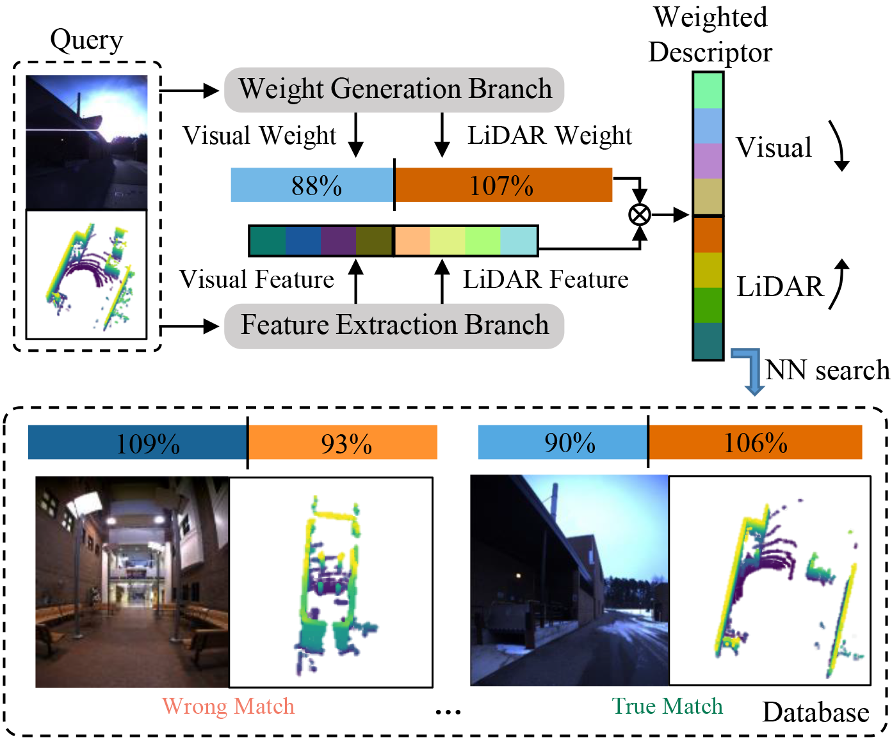

|
|
RF-Based 3D SLAM Rivaling Vision Approaches
Haowen Lai, Zhiwei Zheng, Mingmin Zhao
(MobiCom 2025) ACM International Conference on Mobile Computing and Networking (To appear)
This paper presents CartoRadar, a novel RF-based SLAM system that delivers high-fidelity 3D mapping with
centimeter-level accuracy. CartoRadar builds on top of the advancements in learning-based RF imaging.
However, learning-based systems often exhibit variation in prediction accuracy during inference.
To address this challenge and enable robust RF sensing, CartoRadar introduces a novel, training-free
uncertainty quantification method tailored to RF signals. Additionally, CartoRadar features an efficient SLAM algorithm
that incorporates this uncertainty into the mapping process. We deploy CartoRadar on a mobile robot and conduct extensive
evaluations across 14 floors in 5 buildings. Results show that CartoRadar achieves a trajectory error of 14.1 cm,
outperforming camera-based baselines by 72.1%. For mapping, CartoRadar achieves an accuracy of 7.4 cm and a completion of 8.1 cm,
improving over vision methods by 46.2% and 67.6%, respectively. Code, datasets, and demo videos are available on our
website.
|

|
Enabling Visual Recognition at Radio Frequency
Haowen Lai, Gaoxiang Luo, Yifei Liu, Mingmin Zhao
(MobiCom 2024) ACM International Conference on Mobile Computing and Networking
🌟 Best Demo Award!
🌟 1st Place in Student Research Competition!
📰 Media Coverage: BBC,
Penn Engineering,
DeepTech!
This paper introduces PanoRadar, a novel RF imaging system that brings RF resolution close to that of LiDAR,
while providing resilience against conditions challenging for optical signals. Our LiDAR-comparable 3D imaging
results enable, for the first time, a variety of visual recognition tasks at radio frequency, including surface
normal estimation, semantic segmentation, and object detection. PanoRadar utilizes a rotating single-chip mmWave
radar, along with a combination of novel signal processing and machine learning algorithms, to create
high-resolution 3D images of the surroundings. Our system accurately estimates robot motion, allowing for coherent
imaging through a dense grid of synthetic antennas. It also exploits the high azimuth resolution to enhance elevation
resolution using learning-based methods. Furthermore, PanoRadar tackles 3D learning via 2D convolutions and addresses
challenges due to the unique characteristics of RF signals. Our results demonstrate PanoRadar's robust performance
across 12 buildings. Code, datasets, and demo videos are available on our
website.
@inproceedings{panoradar,
title={Enabling Visual Recognition at Radio Frequency},
author={Lai, Haowen and Luo, Gaoxiang and Liu, Yifei
and Zhao, Mingmin},
booktitle={Proceedings of the 30th Annual International
Conference on Mobile Computing and Networking (MobiCom)},
pages={388--403},
year={2024}
}
|

|
AutoMerge: A Framework for Map Assembling and Smoothing in City-Scale Environments
Peng Yin, Shiqi Zhao, Haowen Lai, Ruohai Ge, Ji Zhang, Howie Choset, Sebastian Scherer
(T-RO 2023) IEEE Transactions on Robotics
In the era of advancing autonomous driving and increasing reliance on geospatial information, high-precision mapping not only
demands accuracy but also flexible construction. Current approaches mainly rely on expensive mapping devices, which are time
consuming for city-scale map construction and vulnerable to erroneous data associations without accurate GPS assistance. In this
article, we present AutoMerge, a novel framework for merging large-scale maps that surpasses these limitations, which: 1) provides
robust place recognition performance despite differences in both translation and viewpoint; 2) is capable of identifying and
discarding incorrect loop closures caused by perceptual aliasing; and 3) effectively associates and optimizes large-scale and
numerous map segments in the real-world scenario. AutoMerge utilizes multiperspective fusion and adaptive loop closure detection
for accurate data associations, and it uses incremental merging to assemble large maps from individual trajectory segments given
in random order and with no initial estimations. Furthermore, AutoMerge performs pose graph optimization after assembling the
segments to smooth the merged map globally. We demonstrate AutoMerge on both city-scale merging (120 km) and campus-scale repeated
merging (4.5 km x 8). The experiments show that AutoMerge: 1) surpasses the second- and third-best methods by 0.9% and 6.5% recall
in segment retrieval; 2) achieves comparable 3-D mapping accuracy for 120-km large-scale map assembly; and 3) and is robust to
temporally spaced revisits. To our knowledge, AutoMerge is the first mapping approach to merge hundreds of kilometers of individual
segments without using GPS.
@article{yin2023automerge,
title={Automerge: A Framework for Map Assembling
and Smoothing in City-Scale Environments},
author={Yin, Peng and Zhao, Shiqi and Lai, Haowen
and Ge, Ruohai and Zhang, Ji and Choset, Howie
and Scherer, Sebastian},
journal={IEEE Transactions on Robotics},
volume={39},
number={5},
pages={3686-3704},
year={2023}
}
|

|
Homicidal Chauffeur Reach-Avoid Games via Guaranteed Winning Strategies
Rui Yan, Ruiliang Deng, Haowen Lai, Weixian Zhang, Zongying Shi, Yisheng Zhong
(TAC 2023) IEEE Transactions on Automatic Control
This article studies a planar Homicidal Chauffeur reach-avoid differential game, where the pursuer is a Dubins car and the evader
has simple motion. The pursuer aims to protect a goal region from the evader. The game is solved in an analytical approach instead
of solving Hamilton-Jacobi-Isaacs equations numerically. First, an evasion region is introduced, based on which a pursuit strategy
guaranteeing the winning of a simple-motion pursuer under specific conditions is proposed. Motivated by the simple-motion pursuer,
a strategy for a Dubins-car pursuer is proposed when the pursuer-evader configuration satisfies separation condition (SC) and
interception orientation (IO) . The necessary and sufficient condition on capture radius, minimum turning radius, and speed ratio
to guarantee the pursuit winning is derived. When the IO is deviated (Non-IO), a heading adjustment pursuit strategy is proposed,
and the condition to achieve IO within a finite time is given. Based on it, a two-step pursuit strategy is proposed for the SC and
Non-IO case. A nonconvex optimization problem is introduced to give a condition guaranteeing the winning of the pursuer. A polynomial
equation gives a lower bound of the nonconvex problem, providing a sufficient and efficient pursuit winning condition. Finally, we
extend to multiplayer games by collecting pairwise outcomes for pursuer-evader matchings. Simulations are provided to illustrate
the theoretical results.
@article{yan2023homicidal,
title={Homicidal Chauffeur Reach-Avoid Games via
Guaranteed Winning Strategies},
author={Yan, Rui and Deng, Ruiliang and Lai, Haowen and
Zhang, Weixian and Shi, Zongying and Zhong, Yisheng},
journal={IEEE Transactions on Automatic Control},
volume={69},
number={4},
pages={2367-2382},
year={2023}
}
|
|

|
AdaFusion: Visual-LiDAR Fusion with Adaptive Weights for Place Recognition
Haowen Lai, Peng Yin, Sebastian Scherer
(RA-L 2022) IEEE Robotics and Automation Letters
Recent years have witnessed the increasing application of place recognition in various environments,
such as city roads, large buildings, and a mix of indoor and outdoor places. This task, however, still remains
challenging due to the limitations of different sensors and the changing appearance of environments.
Current works only consider the use of individual sensors, or simply combine different sensors, ignoring the
fact that the importance of different sensors varies as the environment changes. In this paper, an
adaptive weighting visual-LiDAR fusion method, named AdaFusion, is proposed to learn the weights for
both images and point cloud features. Features of these two modalities are thus contributed differently
according to the current environmental situation. The learning of weights is achieved by the attention branch
of the network, which is then fused with the multi-modality feature extraction branch. Furthermore,
to better utilize the potential relationship between images and point clouds, we design a twostage fusion approach
to combine the 2D and 3D attention. Our work is tested on two public datasets, and experiments show that
the adaptive weights help improve recognition accuracy and system robustness to varying environments.
@article{lai2022adafusion,
title={Adafusion: Visual-lidar Fusion with Adaptive
Weights for Place Recognition},
author={Lai, Haowen and Yin, Peng and Scherer, Sebastian},
journal={IEEE Robotics and Automation Letters},
volume={7},
number={4},
pages={12038--12045},
year={2022},
publisher={IEEE}
}
|

|
Global Registration of Point Cloud Maps with Low-overlap Regions
Wenhao Liang, Haowen Lai, Zongying Shi, Yisheng Zhong
(CCC 2022) IEEE Chinese Control Conference
Merging multiple maps is necessary when the task of mapping a large area is divided and assigned to
different robots. Unlike scanned or reconstructed models, point cloud maps built by SLAM are usually
sparser and contain much noise, making current global registration methods failed. In this paper, we
focus on the global registration of point cloud maps which have low-overlap regions and no prior
relative transformation between each other, so that maps can still be merged in GPS-denied environment.
Our method adopts a pipeline of feature matching, where key points are first selected evenly within voxel
grids and then used for getting feature descriptors. After matching for correspondences, a RANSAC based
registration gives the rough transformation between maps, which can further be refined by ICP. To improve
the accuracy of correspondences, we specifically introduce a keypoint clustering and classification method.
Except for 3D point cloud maps as inputs, no other information is needed. Experiments on the campus show
that our approach successfully deals with large area with similar structures.
@inproceedings{liang2022global,
title={Global Registration of Point Cloud Maps with
Low-overlap Regions},
author={Liang, Wenhao and Lai, Haowen and Shi, Zongying
and Zhong, Yisheng},
booktitle={2022 41st Chinese Control Conference (CCC)},
pages={3743--3748},
year={2022},
organization={IEEE}
}
|
|
|
Reach-Avoid Differential Games via Finite-Time Heading Tracking
Haowen Lai, Rui Yan, Weixian Zhang, Zongying Shi, Yisheng Zhong
(CDC 2021) IEEE Conference on Decision and Control
This paper considers a one-defender-one-attacker reach-avoid differential game (DG) in the plane which is split by a
straight line into a goal region and a play region. The attacker aims at entering the goal region from the play region
without being captured, while the defender tries to capture the attacker in the play region. We focus on the defense
problem where the defender is a Dubins car and the attacker is a simple-motion model. First, a controller is proposed
for the defender to track a reference heading which is derived from an evasion space (ES)-based defense strategy.
Then, an upper bound for the time derivative of the reference heading is computed. Based on it, we show that the
defender can succeed to track the reference heading within a finite time. Finally, both simulation and experiment
examples are provided, where a vision-based re-localization method is used for the experiment to deal with the
coordinate inconsistency problem.
@inproceedings{lai2021ReachAvoid,
author={Lai, Haowen and Yan, Rui and Zhang, Weixian and
Shi, Zongying and Zhong, Yisheng},
booktitle={2021 60th IEEE Conference on Decision and
Control (CDC)},
title={Reach-Avoid Differential Games via Finite-Time
Heading Tracking},
year={2021},
pages={1656-1662},
doi={10.1109/CDC45484.2021.9683266}
}
|
|
|
LiDAR-Inertial based Localization and Perception for Indoor Pursuit-Evasion Differential Games
Haowen Lai, Wenhao Liang, Rui Yan, Zongying Shi, Yisheng Zhong
(CCC 2021) IEEE Chinese Control Conference
Pursuit-evasion (PE) differential games are widely studied due to their enormous application prospects in robotics.
Most of current works, however, focus on the theory and simulation, while even for some experiments the global
information is directly acquired by external devices or just by sharing, which is far from the real scenarios. Motivated
by this limitation, we propose a LiDAR-inertial based localization and perception method to estimate robot states
such as position, pose and velocity required by high-level strategies. The LiDAR-inertial odometry (LIO) that utilizes
data from 3D LiDAR and IMU provides self localization in an unknown environment. To locate other robots, a curve
fitting based algorithm for 3D LiDAR point clouds is proposed, after which a sliding window average method is
adopted to filter the noise in the perception results. Except for 3D LiDAR and IMU, no other sensors or communication
is needed. Experiments are presented to illustrate the results.
@inproceedings{lai2021LiDAR,
author={Lai, Haowen and Liang, Wenhao and Yan, Rui and
Shi, Zongying and Zhong, Yisheng},
booktitle={2021 IEEE 40th Chinese Control Conference (CCC)},
title={LiDAR-Inertial based Localization and Perception for
Indoor Pursuit-Evasion Differential Games},
year={2021},
pages={7468-7473},
doi={10.23919/CCC52363.2021.9549330}
}
|

|
A Novel Scale Recognition Method for Pointer Meters Adapted to Different Types and Shapes
Haowen Lai, Qi Kang, Le Pan, Can Cui
(CASE 2019) IEEE International Conference on Automation Science and Engineering
Nowadays plenty of pointer meters are used in the field of chemical industry and electrical power system. To avoid
reading their indication manually, many algorithms based on computer vision have been proposed to read pointer meters
automatically. These methods, however, are limited to meters whose scales are uniform, and their accuracy is vulnerable to
the error in the recognition of a meter's center. In this paper, a novel automatic reading algorithm of pointer meters based on
scale seeking is proposed to overcome the weaknesses of the existing methods. Differing from the popular angle-based
methods, we obtain the indication of the meter by comparing the distances between the peak of pointer and its nearest scales. The
position and values of all scales can be automatically acquired and inferred by using our scale seeking and value inference
algorithms, which is independent of any prior information in a database. Experiments prove that the algorithm can be applied
to both meters with uniform or non-uniform scales effectively.
@inproceedings{lai2019novel,
author = {Lai, Haowen and Kang, Qi and Pan, Le and Cui, Can},
booktitle = {2019 IEEE 15th International Conference on
Automation Science and Engineering (CASE)},
title = {A Novel Scale Recognition Method for Pointer
Meters Adapted to Different Types and Shapes},
year = {2019},
pages={374-379},
organization={IEEE},
doi={10.1109/COASE.2019.8843107}
}
|